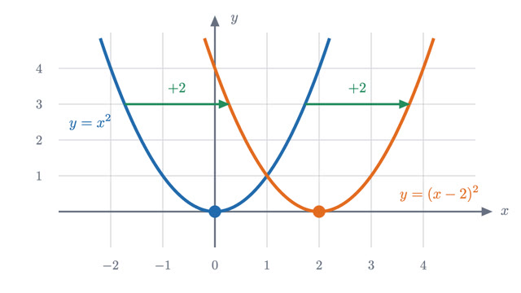
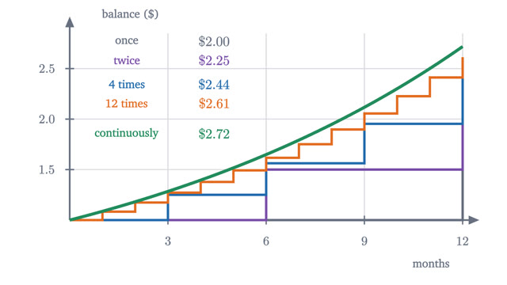
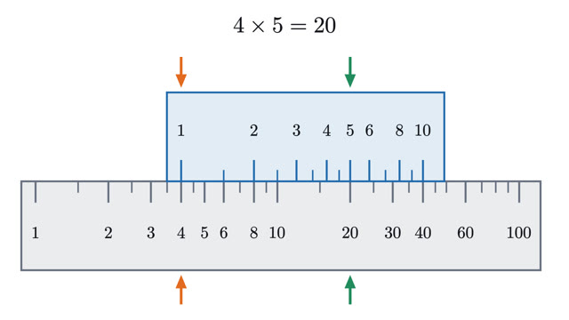
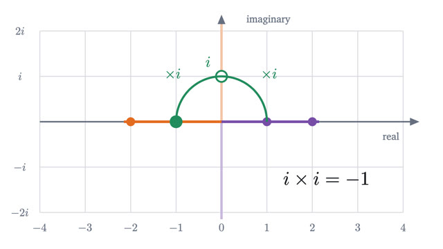
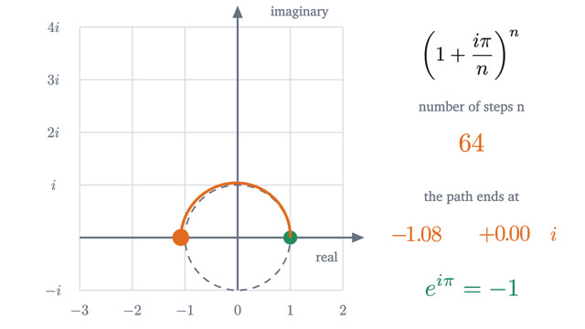
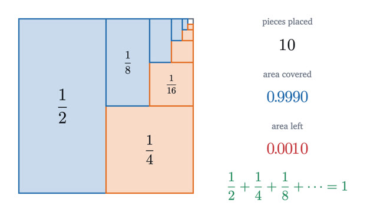
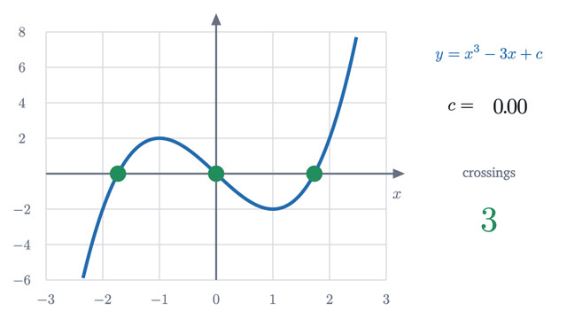

Precalculus
Functions, exponentials, logarithms, complex numbers and series.
Start with lesson 1-
1
Shifting and stretching graphs: why f(x - 2) moves rightAdding 2 outside a function lifts its graph, but subtracting 2 inside moves it right. A graph is a set of points, and tracking one point explains why.

-
2
Compound interest and where e comes fromPay 100% interest in more and more instalments and a dollar grows to 2, 2.25, 2.44, 2.61, and then stops short of 2.72. That ceiling is the number e.

-
3
What a logarithm is: turning multiplication into additionA logarithm answers "what exponent gives this number?". Because exponents add when powers multiply, logarithms turn every product into a sum.

-
4
Complex numbers: why multiplying by i is a quarter turnNo number on the line squares to -1. Read multiplication by -1 as a half turn and the missing number appears: a quarter turn, which needs a second axis.

-
5
Euler's formula: why e^(iπ) = -1You cannot multiply e by itself iπ times, so the famous equation needs a definition first. Compound interest supplies one, and it leads around a circle.

-
6
Geometric series, and why 0.999... equals 1What it means to add infinitely many numbers, when a geometric series has a sum, the formula a/(1 - r) with proof, and why 0.999... is exactly 1.

-
7
Roots, factors and the shape of a polynomialA cubic crosses the x axis once or three times, never exactly twice. The factor theorem, multiplicity and the leading term explain why, with proofs.
